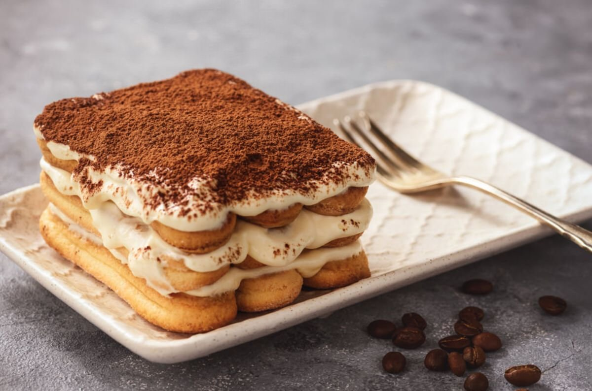

Tiramisu

Ingredients
- 4 large egg
- 100 grams granulated sugar
- 1 cup Mascarpone
- 3/4 cups espresso or coffee
- 2 tbs rum
- 2 tbs cocoa powder
- 200 gram package ladyfingers
Steps
- Separate the egg whites from the egg yolks
- mix the egg whites and half of the sugar in bain marie
- whip the mix until steady peaks
- mix the other half of the sugar with the egg yolks
- add the mascarpone to the egg yolks sugar mix and mix it together
- add the egg whites sugar mix to the mascarpone mix in steps
- soak one side of the ladyfingers in the coffee and place one layer into a ceramic or glas cooking pan
- spread the mascarpone cream on top of the ladyfingers
- keep adding layers in this manner
- let the tiramisu rest in the fridge for at least 8 hours
- take it out and add a layer of cocoa powder before serving
- enjoy!